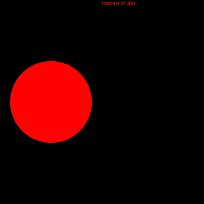

Animation helper functions
Luxor provides some functions to help you create animations—at least, it provides some assistance in creating lots of individual frames that can later be stitched together to form a moving animation, such as a GIF or MP4.
There are four steps to creating an animation.
1 Use Sequence to create a Sequence object which determines the title and dimensions.
2 Define a suitable backdrop(seq::Sequence, framenumber, framerange) function that contains graphics functions that are used on every frame of an animation sequence. For example, this is a good place to define a constant background color.
3 Define a suitable frame(seq::Sequence, framenumber, framerange) function that constructs the contents of the frame numbered framenumber. The total framerange is available for possible reference inside the function.
4 Call the animate(seq::Sequence, framerange, backdrop, frame) function, passing in your two functions (which don't have to be called anything special, but which should have the arguments shown above). This creates all the frames in the given framerange and saves them in a temporary directory.
Example
using Luxor
demo = Sequence(400, 400, "test")
function backdropf(demo, framenumber, framerange)
background("black")
end
function framef(demo, framenumber, framerange)
xpos = 100 * cos(framenumber/100)
ypos = 100 * sin(framenumber/100)
sethue(Colors.HSV(rescale(framenumber, 0, length(framerange), 0, 360), 1, 1))
circle(xpos, ypos, 90, :stroke)
gsave()
translate(xpos, ypos)
juliacircles(50)
grestore()
text(string("frame $framenumber of $(length(framerange))"), O)
end
animate(demo, 1:630, backdropf, framef, createanimation=true)
Luxor.Sequence — Type.The Sequence type and the animate() function are designed to help you create the frames that can be used to make an animated GIF or movie.
Provide width, height, and a title to the Sequence constructor:
demo = Sequence(400, 400, "test")Then define suitable backdrop and frame functions.
Finally run the animate() function, calling those functions.
Luxor.animate — Function.animate(seq::Sequence, frames::Range, backdrop_func, frame_func;
createanimation = true)Create frames in the range frames, using a backdrop function and a frame function.
The backdrop function is called for every frame.
function backdropf(demo, framenumber, framerange)
...
endThe frame generating function draws the graphics for a single frame.
function framef(demo, framenumber, framerange)
...
endThen call animate() like this:
animate(demo, 1:100, backdropf, framef)If createanimation is true, the function tries to call ffmpeg on the resulting frames to build the animation.
Making the animation
Building an animation such as a GIF or MOV file is best done outside Julia, using something like ffmpeg, with its thousands of options, which include frame-rate adjustment and color palette tweaking. The animate function has a go at running it on Unix platforms, and assumes that ffmpeg is installed. Inside animate(), the first pass creates a color palette, the second builds the file:
run(`ffmpeg -f image2 -i $(tempdirectory)/%10d.png -vf palettegen -y $(seq.stitle)-palette.png`)
run(`ffmpeg -framerate 30 -f image2 -i $(tempdirectory)/%10d.png -i $(seq.stitle)-palette.png -lavfi paletteuse -y /tmp/$(seq.stitle).gif`)Passing information to later frames
Sometimes you want some information to be passed from frame to frame, such as the updated position of a graphical shape. Currently, the only way to do this is to store things in the sequence's parameters dictionary.
For example, for a "bouncing ball" animation, you can store the current position and direction of the ball in the Sequence.parameters dictionary at the end of a frame, and then recall them at the start of the next frame.
function frameF(seq::Sequence, framenumber, framerange)
pos = seq.parameters["pos"]
direction = seq.parameters["direction"]
spriteradius = seq.parameters["spriteradius"]
# ... code to modify position, direction, and radius
seq.parameters["pos"] = newpos
seq.parameters["direction"] = newdirection
seq.parameters["spriteradius"] = spriteradius
end